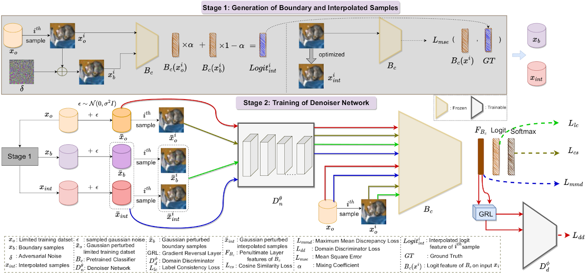
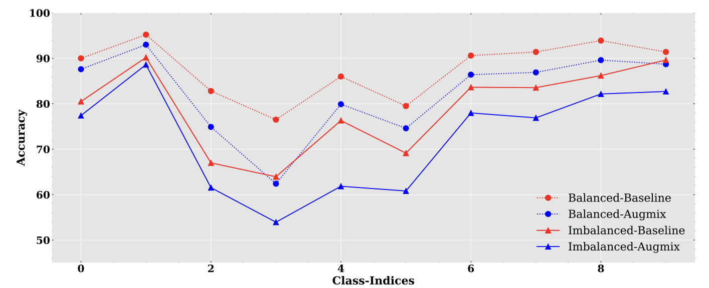
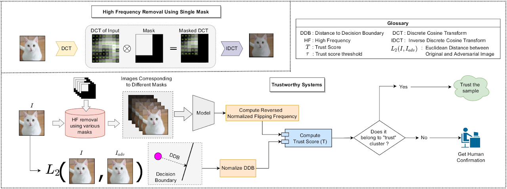
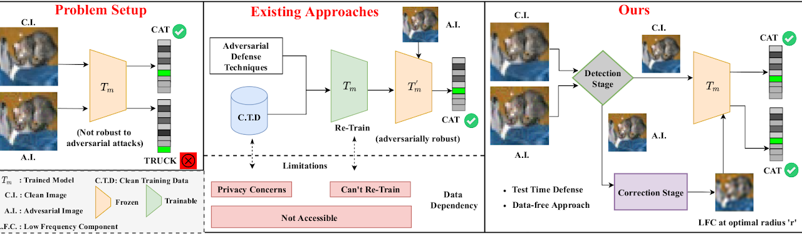
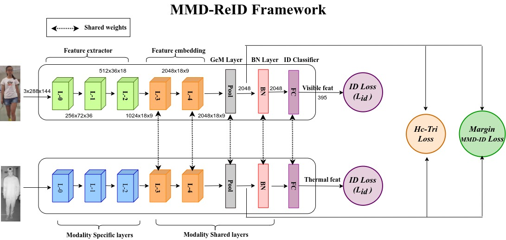
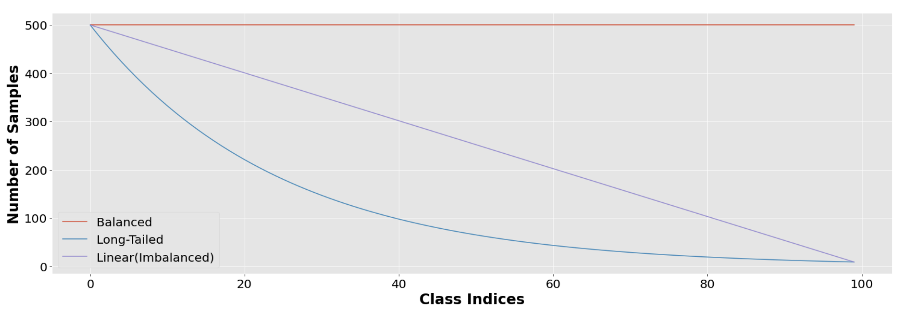
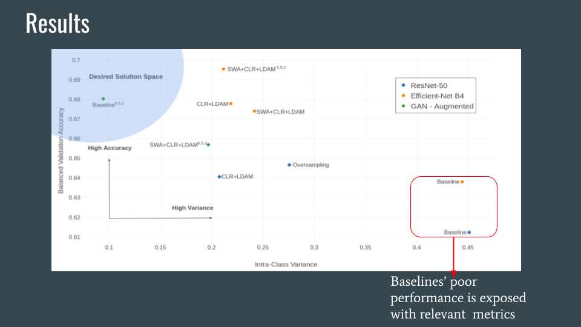

Ruchit Rawal
Namaste 🙏
I am a research intern in the BrAIN group at the Max Planck Institute for Software Systems (MPI-SWS) advised by Prof. Mariya Toneva. My primary research interests are centered around the intersection of machine learning and computational neuroscience.
Previously I was a (research) project assistant at the Indian Institute of Science under the guidance of Prof. Anirban Chakraborty, where I developed methods for training adversarially robust neural networks under low-resource constraints.
Feel free to drop me an email, if you would like to discuss possible collaborations!
Recent News
- Sep 2022: Started research intership at MPI-SWS.
Research
|
 |
Performance of existing certified defenses significantly deteriorates as training data size is reduced. We introduce a novel data-augmentation technique that
improves their data-efficiency.
Gaurav Kumar Nayak*, Ruchit Rawal*, Anirban Chakraborty.
|
|
 |
Dynamics of Dataset Bias and Robustness
Principles of Distribution Shift (PODS), ICML-Workshop 2022
Exploring the effects of various techniques for improving robustness under distribution-shift on the dataset-bias.
Prabhu Pradhan*, Ruchit Rawal*
|
|
 |
Holistic Approach To Measure Sample-Level Adversarial Vulnerability and Its
Utility in Building Trustworthy Systems
CVPR-2022 Wokrshop on Human-centered Intelligent Services: Safety and Trustworthy
Propose a holistic approach for quantifying adversarial vulnerability of a sample by combining multiple perspectives.
Gaurav Kumar Nayak*, Ruchit Rawal*, Rohit Lal*, Himanshu Patil, Anirban Chakraborty.
|
|
 |
We propose a novel problem of "test-time adversarial defense in absence of training data and even their statistics" and provide first steps to solve it.
Gaurav Kumar Nayak*, Ruchit Rawal*, Anirban Chakraborty.
|
|
 |
Learning modality invariant features is central to the problem of Visible-Thermal cross-modal Person Reidentification (VT-ReID). We propose a simple but effective
framework, MMD-ReID, that reduces the modality gap by an explicit discrepancy reduction constraint.
Chaitra Jambigi*, Ruchit Rawal*, Anirban Chakraborty
|
|
 |
Rendezvous between Robustness and Dataset Bias: An empirical study
NeurIPS-2020 pre-registration Workshop
We shine a light on the effects of various techniques for perturbarial robustness on dataset-distribution bias (i.e. class imbalance).
Prabhu Pradhan*, Ruchit Rawal*, Gopi Kishan
|
|
 |
Generalizing across the (in)visible spectrum
ICML-2020 Workshop on Extreme Classification, ORAL
Improvements in robustness do not translate to better intrinsic generalization (esp. in case of high imbalance or long-tail scenarios).
Ruchit Rawal*, Prabhu Pradhan*
|

|
Climate Adaptation: Reliably Predicting from Imbalanced Satellite Data
CVPR-2020 Workshop on AGRICULTURE-VISION, ORAL
Real-World datasets usually suffer from high class imbalance, impeding a model's ability to learn effectively. We provide a comprehensive guide on the effectiveness of various state-of-the-art methodologies in a combination setting.
Ruchit Rawal*, Prabhu Pradhan*
|